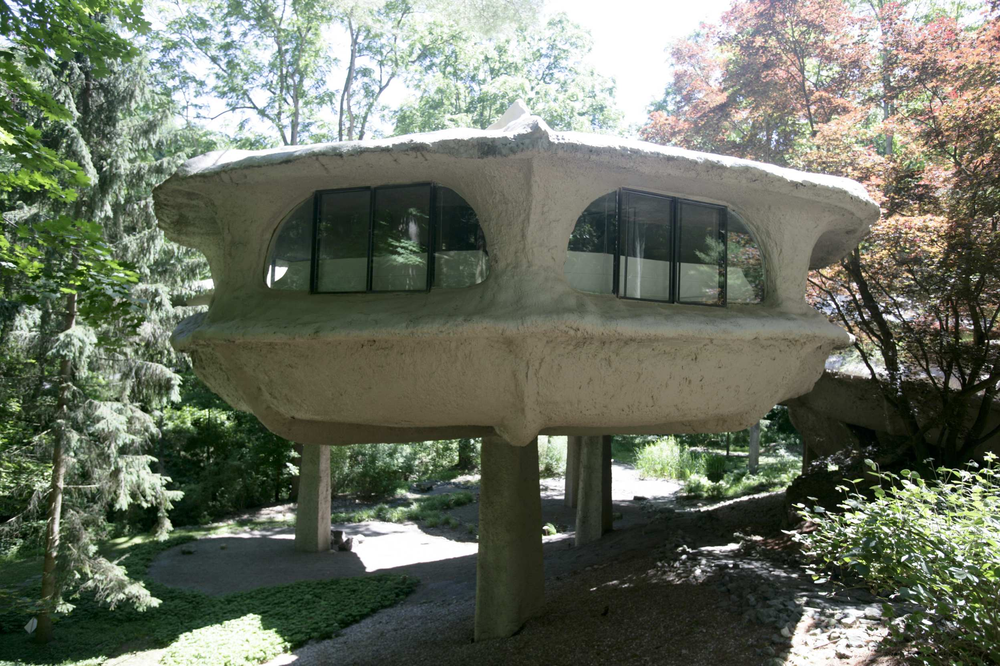
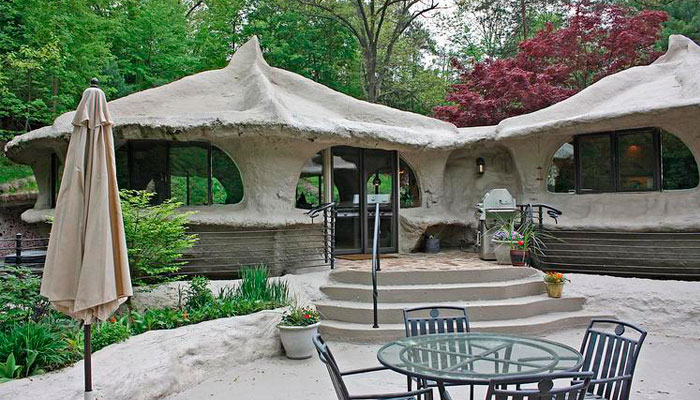
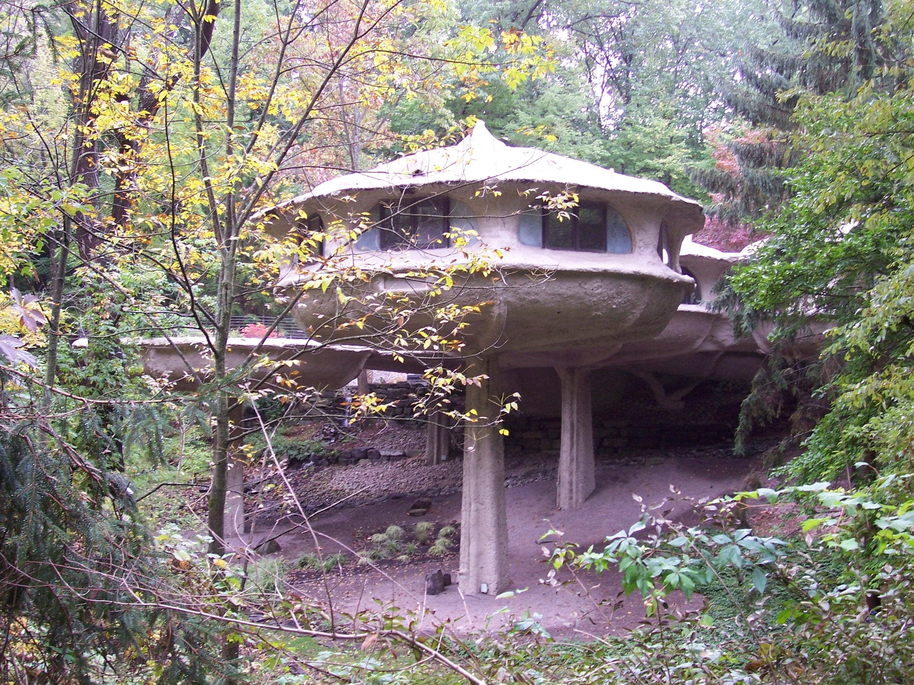

The Mushroom House
The Mushroom House is a very special and funny-looking home. It looks like a group of big mushrooms growing in the forest. The roof is round, and the walls are soft and curved, just like real mushrooms.
This amazing house is in New York, USA. It was built many years ago by an architect who loved nature. He wanted to make a home that looked natural and peaceful. The house is made of special materials that help it stay warm in winter and cool in summer.
Inside the Mushroom House, everything is unique. The rooms are round, and the windows are big and bright. There is a living room, a kitchen, and bedrooms with soft colors and wooden furniture. It feels warm, quiet, and cozy inside.
Many tourists visit the Mushroom House because it is creative and looks like something from a fairy tale. It shows that a house doesn’t have to be square or simple — it can be artistic and part of nature.


